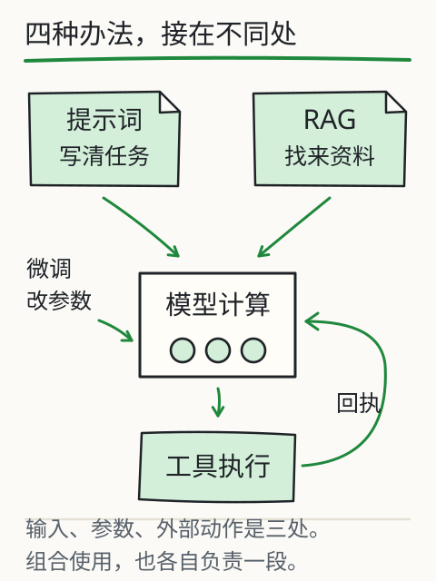

什么时候需要搭系统？
手头有一页通知，想整理一次；另一项工作却要每天回答两千份手册里的问题。两件事都能叫“用大模型”，动手方式却差得很远。先别急着选一个名字听起来厉害的方案，找出任务现在卡在哪里。

缺材料，就想办法把材料送进来；要做确定的计算，就找程序执行；反复学不会固定格式，再评估训练是否值得。图里的每一条路，都从一个具体缺口出发。
下面有五个场景。选方案前，先用一句话说出“它缺的是什么”，再看理由是否对得上。有些方法能组合，练习要你选的是当前最先值得尝试的一步。

先判断缺的是什么
这是有前提的方案练习，没有唯一通用架构。选择仅适用于给定条件；真实项目要用任务样本评估成本、延迟和错误。
资料少、任务偶尔做，先把输入写清
一页通知放得下，又只整理一次，直接把原文给模型就可以起步。约定输出字段，缺失的留空或标未知，每项带原句，拿到结果再核对。
如果已经够用，先留下这次成功或失败的样例。资料索引、长链工作流、多角色对话都要维护，等你确实遇到它们能解决的问题，再加也来得及。
经常缺新资料，考虑检索
手册每天更新，模型却总拿旧规定回答。这时先查最新片段有没有进入输入。检索可以带着版本和出处取回材料，资料变动时也便于更新、追查。
微调可能改变行为，也可能学到内容，却没有给每条规定提供同样的更新与引用通道。因此，不能默认“把手册训练一遍”就得到了可靠的动态资料库。
缺确定动作，接受控工具
如果材料已经够了，卡在重算、查数据库或执行特定动作，就把有依据的参数交给对应程序，检查它的回执。工具能执行，也要先知道数据来自哪里、适用于什么范围。
费用核算可能同时缺最新费率和计算能力：先检索费率并确认版本，再调用计算工具。任何一步材料不足，都把原因留在结果里。一个任务可以需要几块部件，不必只选一个名词。


固定习惯反复失败，再评估微调
另一种卡点是：任务量很大，材料够用，模型却反复漏同一类字段。先试示例、明确指令、格式约束和验证；这些仍解决不了稳定失败，而且有获授权的示范数据与独立评测集时，才有条件评估微调。
训练前就写下要查什么：这类字段是否少漏了，格式错误是否减少了，其他任务有没有退步。否则即使完成了一轮训练，也很难回答“到底改善了什么”。
选择模型也按任务来测
选模型也按这套办法：把 DeepSeek V4.1 Flash 和 Kimi K3 放进同一组任务，保留输入、实际版本、模式、延迟、费用口径和逐项结果。一个开着搜索、另一个只聊天，测到的差异就不只是模型能力。
课程尚未采集这项实测，不给两者排位。你的任务可能更在乎引用准确、缺证据会停，那就把这两项写进验收表；写得长或语气肯定，都不能替它们作答。
从失败原因选方案，不从产品名字选
再做一次排错：模型总说旧费率，你会先换模型，还是先看它收到了什么？如果最新资料没进去，先补有效来源或检索；已经进去却引用错了，要查使用和核验。如果费率正确、乘法错了，就试可核对的计算工具；材料足够、格式长期不稳定，再比较更清楚的示例、约束输出或微调。
“那能不能蒸馏一个小模型来做？”可以把选定的教师行为用于学生训练，也可能借此满足某些部署限制；但蒸馏并不负责实时同步新规定，出处仍要核验。数据蒸馏可以通过 SFT 实施，训练出的学生再接 RAG、工具，或做量化。它们处理的是不同层面，可以放进同一套系统。
先留下一条能完成任务的最小流程，再一次只加一种方法，看看具体改善了什么。自动 Agent 自行规划，也需要任务的步骤确实值得动态选择，并且失败、停止与授权都能控制。固定流程已经够用时，加一层规划也多了一处可能走错的地方。
费用也像任务一样拆开算：一次性建设、教师数据生成、训练、调用、持续维护分别花多少，再放进真实使用次数里比较。单次调用便宜，未必覆盖得过建设和维护；更长的上下文、更多工具轮次与更长输出也会改变时延。没有实际测量，就写清算式与条件，不给通用的省钱倍数。
拿 DeepSeek V4.1 Flash、Kimi K3 或其他可用模型来比较时，把同一批材料、同一组验收字段放到面前，记下实际版本与模式。先看缺失、冲突、引用和执行失败怎样处理。哪一项没测，就留下空白，等真正跑过再填。
再深一层
方案跑起来后，别让一个平均成功率把问题盖住。把缺失、冲突、无结果、工具失败分开看，才能知道下一步该改资料、检索、提示还是执行程序。方法可以组合，但每加一块，都要说得清它解决了哪个问题。